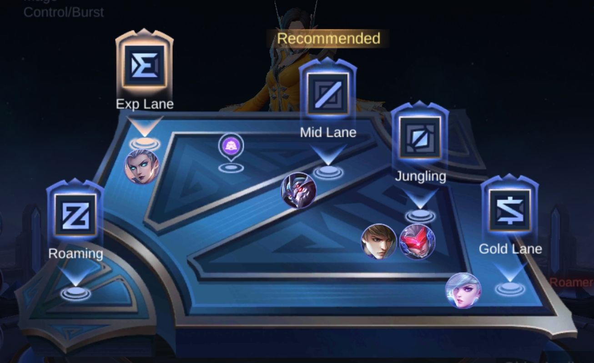
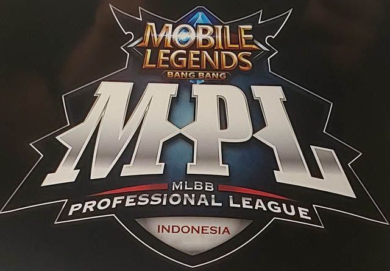
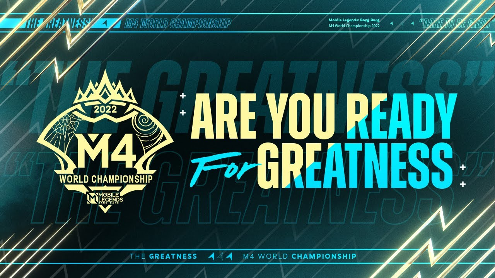
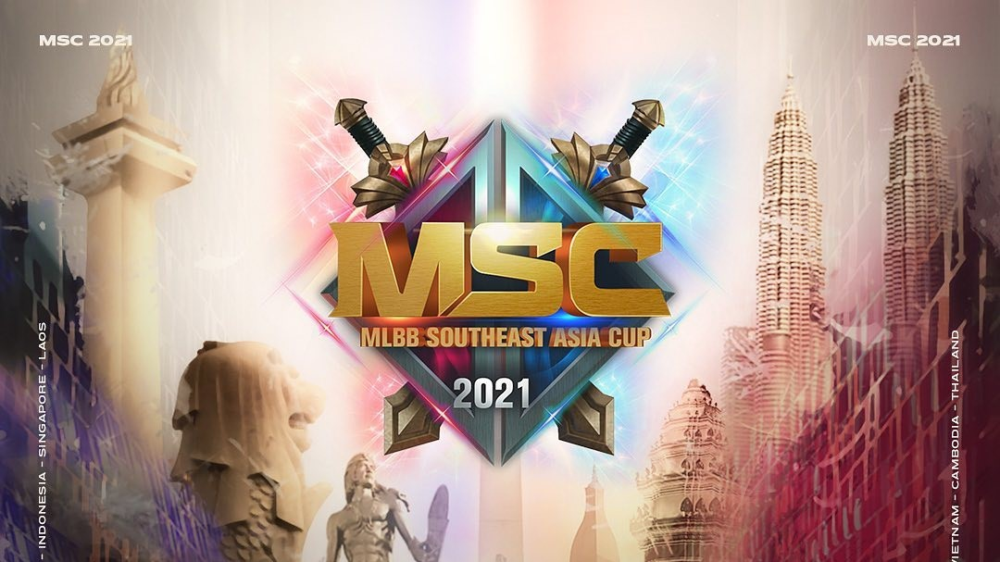
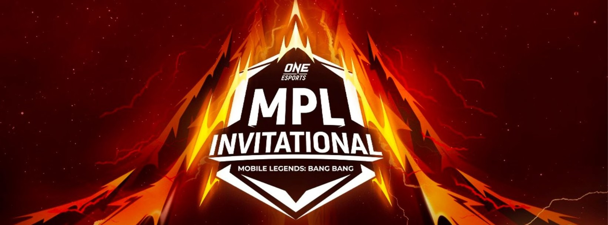

Sejarah

Dirilis pada tahun 2016, game ini semakin populer di seluruh dunia, terutama di wilayah Asia Tenggara, dan sejak itu telah melampaui 1 miliar kali unduhan, dengan puncak pemain bulanan sebanyak 100 juta. Pada tahun 2021, game Mobile Legends: Bang Bang mencapai pendapatan kotor sepanjang masa sebesar US$1 miliar dengan 44 persen pendapatannya berasal dari luar Asia, menjadikannya game seluler teratas dari genrenya dengan daya tarik paling global.
Cara Bermain

Mobile Legends adalah permainan MOBA yang dirancang untuk ponsel. Kedua tim masing-masing berisi lima orang dan berjuang untuk mencapai dan menghancurkan base musuh sambil mempertahankan base mereka sendiri untuk mengendalikan tiga jalur atas, tengah, bawah, atau yang dikenal sebagai jalur toplane, midlane dan bottomlane, yang menghubung ke setiap markas. Base atau biasa disebut dengan markas. Akan tetapi untuk versi sekarang telah beubah menjadi Explane, midlane, dan Goldlane. Ada juga Jungle dan Roam.
Di masing-masing tim, ada lima pemain yang mengendalikan karakter sendiri, yang dikenal sebagai hero, dari perangkat mereka sendiri. Karakter lemah yang dikendalikan komputer disebut dengan minion, yang bersarang di markas tim lalu menyebar ke tiga jalur dan melawan menara serta lawan yang menghadang. Mengumpulkan EXP berguna untuk menaikkan level hero saat permainan berlangsung.
Karakter (Hero)

Pada dasarnya, karakter dalam Mobile Legends dibedakan menjadi 6 role (Peran) di antaranya: marksman, fighter, tank, mage, assassin dan support. Setiap peran mempunyai spesialisasi dan kemampuan atau skill yang unik. Total jumlah hero per Januari 2023 sebanyak 118 hero.
Moonton secara teratur bekerjasama dengan negara-negara di Asia Tenggara yang merupakan pasar mereka dengan pemain Mobile Legends terbanyak di dunia dengan membuat karakter baru berlatar belakang sejarah atau cerita rakyat masing-masing negara untuk meningkatkan daya tarik permainan. Karakter yang berdasarkan kerjasama tersebut yaitu Lapu-Lapu (Filipina), Minsitthar (terinspirasi dari Kyansittha; Myanmar), Kadita (terinspirasi dari Nyi Roro Kidul; Indonesia), dan Badang (Malaysia).
Tournament
Turnamen Mobile Legends Resmi, termasuk Mobile Legends: Bang Bang Southeast Asian Competition (MSC) telah diadakan secara konsisten di kawasan Asia Tenggara. Selain itu, mereka menjalankan dan memiliki liga lokal sendiri, seperti Mobile Legends: Bang Bang Professional League (MPL). Berikut macam-macam tournament mlbb :
1. Mobile Legends: Bang Bang Professional League (MPL)

Mobile Legends: Bang Bang Professional League (MPL) adalah liga di tingkat regional dan berfungsi sebagai kualifikasi untuk Mobile Legends: Bang Bang Kompetisi Asia Tenggara (MSC) sejak 2017 untuk paruh pertama musim tahun ini dan Mobile Legends: Bang Bang World Championship (M World) sejak 2019 untuk paruh musim terakhir tahun ini.
2. Mobile Legends: Bang Bang World Championship

Mobile Legends: Bang Bang World Championship adalah turnamen internasional esports tahunan untuk game Mobile Legends: Bang Bang yang dimana tim di seluruh dunia akan saling berhadapan untuk menjadi juara dunia Mobile Legends. Turnamen tahunan ini dipersembahkan oleh Moonton dan telah diselenggarakan sebanyak empat kali, dan yang keempat ini negara kita Indonesia menjadi tuan rumah kejuaraan ini, namun sayangnya tim perwakilan Indonesia gugur di babak semi final dan mendapatkan peringkat ke-3.
3. Mobile Legends: Bang Bang SouthEast Asia Cup (MSC)

Mobile Legends: Bang Bang South East Asia Cup, sering disebut MSC, adalah turnamen esports tahunan untuk game MOBA mobile Mobile Legends: Bang Bang di Asia Tenggara. Turnamen ini terdiri dari berbagai tim dari berbagai negara di Asia Tenggara seperti Malaysia, Filipina, Indonesia, Thailand, dan Singapura (Sejak 2017), Vietnam, dan Myanmar (Sejak 2018), Kamboja, dan Laos (Sejak 2019).
4. MPL Invitational (MPLI)

One Esports MPL Invitational atau MPL Invitational adalah turnamen Mobile Legends internasional 2020 yang diselenggarakan oleh Moonton dan One Esports. memiliki hadiah sebesar US $ 100.000. MPLI diselenggarakan sebelum tournament kejuaraan tahunan Mobile Legends: Bang Bang.